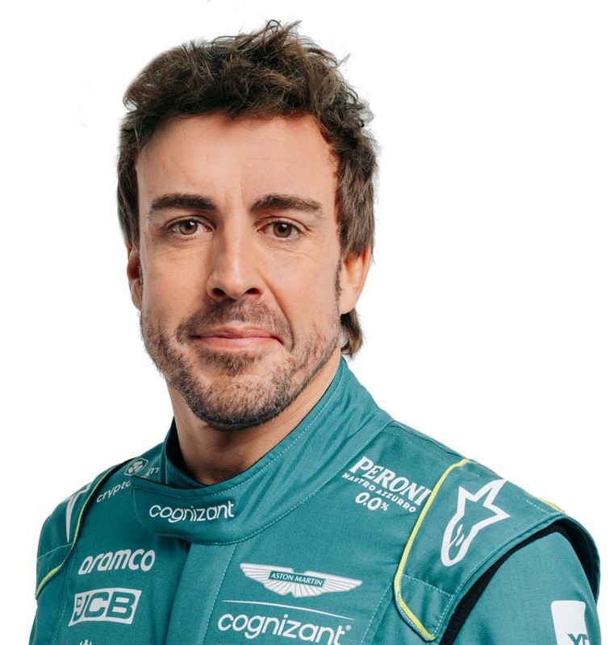

<!DOCTYPE html>
<html lang="en">
<head>
    <link rel="stylesheet" href="style.css"/>
    <meta charset="UTF-8">
    <meta name="viewport" content="width=device-width, initial-scale=1.0">
    <title>Document</title>
</head>
<body>
    
</body>
</html>

 <p class="header-img-text">Image Credit: Wikimedia Commons</p>
<a class="links" href="index.html">Back</a>

<div>
    <h3>P20 Logan Saregant</h3>
    
    <p>Image Credit: Wikimedia Commons</p>
    <h6>Personally I think Logan Sargeant will end the drivers championship in 20th this is because he did not perform very well last year and came 21st in the championship last year with the only other driver below him not being in Formula 1 this year. Also he has not shown really any sign of improvement consistently getting knocked out in Q1 even at the end of last year. Also he is very much in his teamates shadow. Alex Albon got 27 of Williams 28 points. Logan is very lucky he even got a seat this year so this is why I have him this low.</h6>
  
</div>
<div>
    <h3>P19 Estaban Ocon</h3>
    
    <p>Image Credit: Wikimedia Commons</p>
    <h6>This desicion is pretty bold but I think that Alpine is going to be very weak this season as they are under a new team princapal and the car looked terrible in Bahrain. Also along with this Gasly: his teamate hates him and Ocon also hates Gasly. This has caused a very competitive teamate dynamic which could be good if you were not fighting for P17. Also combined with this is I don't really see Alpine improving anytime soon as the leadership is in shambles. If Alpine can not get rid of this issue this issue they are going to go even lower then this is where I see them.</h6>
</div>
    <div>
        <h3>P18 Pierre Gasly</h3>
        
        <p>Image Credit: Wikimedia Commons</p>
        <h6>As with Ocon I think that Alpine is going to be very weak this season as it was a P19 and P20 qualifying for the Alpines in Bahrain and they did not place much better only overtaking Bottas who had a pit issue and Logan Sargeant who crashed off. All this is showing is that Gasly's move to Alpine probably wasn't the best for his career as even VCARB is doing better then Alpine. Gasly needs to get out of this vicious cycle of ALpine if he wants any hope of restoring his career. Some possible moves for Gasly I think are to Sauber which currently is more of a step sideways but in 2026 when it becomes Audi it could be a viable option for Gasly as it becomes another team that makes their own engine. But unlike Alpine they may actually be competitive.</h6>
        </div>
        <br>
         <div> <h3>P17 Valtteri Bottas</h3>
         
        <p>Image Credit: Wikimedia Commons</p>
       <h6> I do not think Stake F1 is going to be a extremly competitive team this year. This is shown by Bottas getting the second slowest pitstop of all time in Bahrain of 52.4 second pitstop. I feel like the car is okay enough to fight for the higher non points paying positions but the pitstops are getting both Sauber drivers stuck behind traffic and ultimatly losing out. Also with the Audi project on the horizon Bottas will be needing to  fight for his career this season as they will probably kick out both current drivers from the team.  </h6>
    </div>
   <div> <h3> P16 Zhou Guanyu </h3>
    
    <p>Image Credit: Wikimedia Commons </p>
    <h6>I feel like the Stake car is not going to be competitive this year due to the fact that is is kind of in a transition phase between being alfa romeo and audi so I do not think it will be the strongest. Despite this I think that Zhou will do better then Bottas overall. Which has been shown by what he was able to do in Bahrain. The problem for Zhou is that he has the exact same problems as Bottas. He really needs to fight for his career this season to try to get into another team who will have him. </h6>
</div>
  <div><h3>P15 Kevin Magnussen</h3>
    
    <p>Image Credit: Wikimedia Commons</p>
    <h6>I feel that Magnussen is going to do slightly better this season as the Haas is not going to be the worst car by far but I still think that Magnussen is not going to do that well as he was knocked out in Q2 in Bahrain compared to his teamate who got to Q3. However I also feel Haas is going to take the position that Williams took last year. But the thing with Haas is they have 2 relativly competitive drivers instead of just Albon for Williams. However I feel that next year Magnussen has a risk of Ollie Bearman who filled in for Carlos Sainz at Ferrari in Jedah. Bearman had an amzing performance and they will probably send him to Haas next year. This has caused their to be a risk for Hulkenberg and Magnussen. I feel though Magnussen should be able to find another seat.</h6></div>
    <div>
        <h3>P14 Nico Hulkenberg</h3>
        
        <p>Image Credit: Wikimedia Commons</p>
        <h6>I feel like the Haas will be slightly more even and slightly more competitive this season so I think this is a reasonable place to put Hulkenberg. He is also in the same spot as Magnussen as a very solid lower midfield driver. If he hasn't secured his seat for Haas next season he will get it from another seat at another lower midfield or backmarker team. But also I think that he may do slightly better than Magnussen this season just due to the fact that he is generally better at qualifying then Magnussen. This means there could be a very solid driver lineup next year of Bearman and Hulkenberg whic would be very intresting to watch. </h6>
    </div>
    <div>
        <h3>P13 Yuki Tsunoda</h3>
        
        <p>Image Credit: Wikimedia Commons</p>
        <h6>Looking at Bahrain it looks like the RBs are not going to be very competiitive. But I also think that Yuki may be quite competitive and will be constantly in a fight for P10 with his teamate Daniel Ricciardo. But for now Yuki has been taking that place. Unfortunatly for Yuki I don't think he is in the running for the Red Bull seat due to his tempremant. He is quite a hothead which generally Red Bull doesn't like in their drivers. However I do think he is in the running for Alonso's or Lance Stroll's Aston Martin seat due to Honda which is the only Japanese engine on the grid partnering with Aston Martin in 2026. So if he doesn't move this year I think he possibly will move next year. </h6>
<div>
    <br>
    <h3>P12 Alexander Albon</h3>
    
    <p>Image Credit: Wikimedia Commons</p>
    <h6>I feel that Albon will do similar to last year as the car is looking pretty ok. However I think it may be a bit harder to get into the points this year. However I can still seeing him do decent this year and mabye also making the move to Audi as he is a pretty solid driver. But to do that he needs to perform this year which the car may not be there for. Albon is one of the most talented drivers of this next generation and I hope for his sake that he has a good season so he can advance his career. </h6>
</div>
<br>
<div>
    <h3>P11 Lance Stroll</h3>
    
    <p>Image Credit: Wikimedia Commons</p>
    <h6>I think he will do similar to last year but probably slightly worse as the car looks not as good as last year. Also as Stroll has said himself 'Diamonds are made under pressure'. The problem for Stroll is he has no pressure. His dad owns the team and even with him drastically under performing last year so much that if he had gotten the same amount of points as his teamate last year Aston Martin would gotten second in the standings. Instead Aston Martin got fifth. But in the coming years Lance may have his seat under pressure with new investors joining Aston Martin. This may pressure Lance to perfrom but this year is not the year. </h6>
</div>
<div>
    <h3>P10 Daniel Ricciardo</h3>
    
    <p>Image Credit: Wikimedia Commons</p>
    <h6>The reason I have placed him so far above his teamate even though they have been relativly equal is I think there might be a chance a slight chance that he might be promoted up to red bull if Perez stops performing at the end of the season. But unfortunatly for Daniel at the momement he is not performing which is a bit of a trend for Daniel. However I hope that he does warm up throughout the season and make the biggest comeback of all time.</h6>
</div>
<div>
    <h3>P9 Fernando Alonso</h3>
    
    <p>Image Credit: Wikimedia Commons</p>
    <h6>The Aston Martin has not been as strong in Bahrain this year as it was last year. And due to the start of the season being where Aston Martin got the most points last year. So unless they improve throughout the year I can not see Alonso getting higher then P9 even though he is an amzing driver. I also think that a move to Red Bull is not off the cards for Alonso. This is due to the fact that he has been pulling that Aston Martin to the absolute limit. This woud be very bad for Aston Martin if Alonso did move to Red Bull as he is basically a one man team. </h6>
</div>
<div>
    <h3>P8 Lewis Hamilton</h3>
    
    <p>Image Credit: Wikimedia Commons</p>
    <h6>It saddens me to say this is where I feel Hamilton is going to end up this season. This is due to the Mercedes not being that great this year and particuarly for Lewis as George has been able to get something out of the car. This is making Ferrari look a bit dumb as Lewis is moving to Ferrari to replace Sainz next year. However Sainz is probably having his best season ever and Lewis is under performing. So this is where I see Lewis ending up. I also see it being close points wise between Alonso and Hamilton which will be an intresgting fight to watch.</h6>
</div>
<div><h3>P7 Oscar Piastri </h3>
    
    <p>Image Credit: Wikimedia Commons</p>
    <h6>The Mclarens have looked a lot stronger this season as well as the Aston Martins being no where near where they were last season so I think that Piastri will be able to get a solid P7 in the Championship. I feel like Oscar is in quite a good place this year and will want to be advancing his career with Mclaren as a very solid team to work with. I also feel that he will make some imporvements from last year as he is more experienced now. </h6></div>
    <div>
        <h3>P6 George Russell</h3>
        
        <p>Image Credit: Wikimedia Commons</p>
        <h6>I feel like Mercedes is not going to be that strong this season as Hamilton has lost faith in the team and is moving to Ferrari. In Bahrain Russell did much better then Hamilton so that is why I have placed Geroge above Hamilton. However I can see that Mercedes is kind of on the decline so I feel that George may be in a bit of trouble in the coming years. I think the only hope of Mercedes is to bring a really good driveer to be teamates with George which is seeming relativly unlikely.</h6>
    </div>
<div><h3>P5 Lando Norris </h3>
    
    <p>Image Credit: Wikimedia Commons</p>
    <h6>I feel like Mclaren is going to be strong this year but not as strong as Red Bull or Ferrari so I think this is where Lando will end up. I also feel like that Lando may get his first win this year as the Mclaren is very strong. But I can not really see him competing with the Ferraris and the Red Bulls throughout the whole season. Also like Piastri he is part of the project to build Mclaren up and has been a part of this since 2019. This is the path I see him continuing on.</h6>
</div>
<div>
    <h3>P4 Charles Leclerc</h3>
    
    <p>Image Credit: Wikimedia Commons</p>
    <h6>I feel that Charles will probably end up here this season. Just due to the fact that the drivers above him have their reasons for getting more points this season. I also feel like Ferrari may be able to take the constructors championship to Red Bull: I am delusional. However there is abit of truth here as Ferrari are not looking that weak this season. However I can see Sainz outperforming Leclerc and both Red Bulls out performing Leclerc. </h6>
</div>
<div><h3>P3 Sergio Perez</h3>
    
    <p>Image Credit: Wikimedia Commons</p>
    <h6>I feel that Perez may fall off towards the end of the season and could possibly be demoted to RB this season so this is why I have put him here despite what he did in Bahrain. I also see him doing worse then Sainz as Sainz has been having the best career of his life. Perez also is famous for falling off towards the end of the season. However it looks like he is going to have a very solid start of the season. It is going to be an itresting fight between him and the two Ferraris. </h6>
</div>
<div><h3>P2 Carlos Sainz</h3>
    <image class="Carlos-Sainz" src="https://upload.wikimedia.org/wikipedia/commons/a/aa/Formel12021-SchlossGabelhofen%2815%29.jpg"/>
    <p>Image Credit: Wikimedia Commons</p>
    <h6>I feel like Carlos is the better driver at Ferrari but Ferrari generally tends to prioritize Leclerc and Sainz has generally gone along with that but this season seeing as he is getting kicked off the team I think Sainz will go all out. Currently Sainz has not been off of the podium for every race he has entered and the only driver that has this statistic this season. He is possilbly having the best season of his life and he is still getting kicked out by Ferrari. This may continue one of Sainz's trends which is being kicked out of a team only to get to go to a better team. This is looking pretty likely as one or both Red Bull Seats have the possibiliy of being freed up. I feel like Alonso and Sainz or Sainz and Max would be a killer combo at Red Bull. For these reasons I have put Sainz here. </h6>
</div>
<div><h3>Max Verstappen</h3>
    <image class="Max-Verstappen" src="https://upload.wikimedia.org/wikipedia/commons/f/f5/Max_Verstappen_-_Nagy_Futam_2018.jpg"/>
    <p>Image Credit: Wikimedia Commons</p>
    <h6>Do I need to say anything</h6>
</div>


 